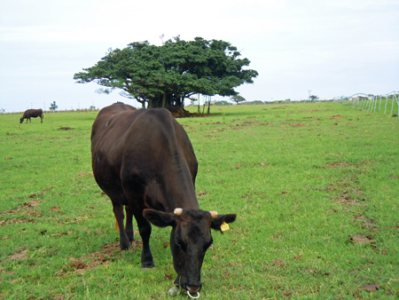
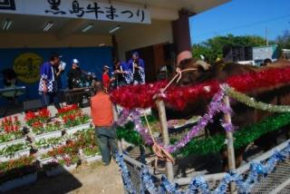

牛
黒島の牛は、「黒毛和牛」とよばれ、石垣牛や松坂牛などの有名なブランド牛になります。 そのため、黒島の牛の数は、黒島の人口の10倍の2800頭います。
牛祭り
黒島で毎年2月下旬に開催される伝統な祭り。その名も牛祭り。島に牛が3000頭以上いることから名付けられた。この祭りは牛汁やステーキ、牛丼などの食べ物はもちろん、音楽イベントやクイズなどの娯楽イベントも開催している。 メインイベントである抽選くじであたりはなんと牛一頭。集え牛好き。
 http://www.nihon-kankou.or.jp/okinawa/473812/detail/47381ba2212053961特産品
石垣牛
パインアップルとアップルマンゴー